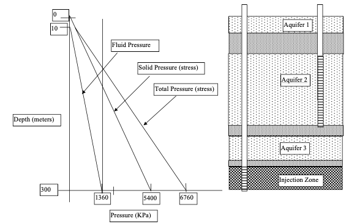
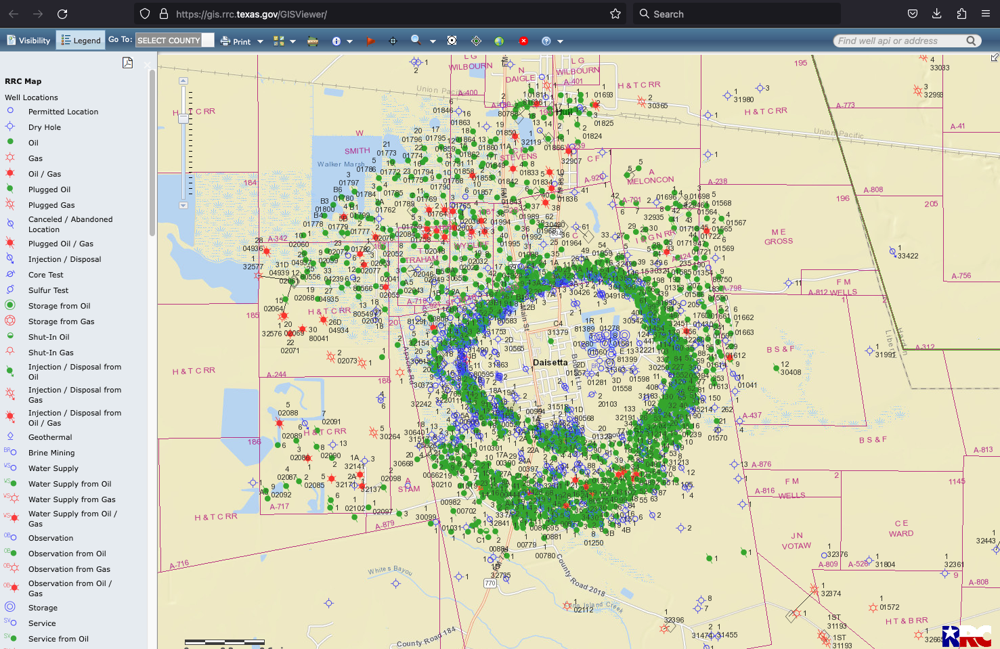
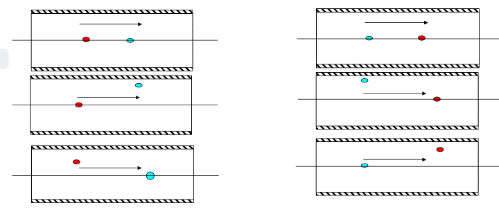

USGS MOC Project (Casing Failure)¶
Background¶
An injection well will be used to re-inject scale from produced water (produced water is water produced as part of oil extraction).
The scale is usually classified as a naturally occuring radioactive material (NORM).
NORM waste is difficult (in a regulatory sense) to dispose of, because the cost of long-term containment is very high.
Economically it is preferable to chemically dissolve the scale, which is the significant radioactive source, and inject the solution into a deep reservoir, typically a depleted oil reservoir. Normally injection wells are operated in batches, and would be monitored frequently during the injection process.
A casing failure means that the casing (riser pipe) connecting the surface injection pump to the reservoir is breached in some fashion and water in injected at an incorrect elevation. A pressure transducer at the injection head would normally detect the loss of pressure from a catastrophic breach (casing failure) and shut off the injection pump. A second kind of failure, possibly more common (casing failures are pretty rare) is poor casing-borehole integrity allowing the injection water to move along the borehole and enter formations at incorrect elevations.
In the figure below the right panel depicts an injection well configuration where the target formation is the deepest one (at around 300 m in the schematic). The left panel depicts hydrostatic liquid pressures and the corresponding effective stress (solids pressure) mostly to illustrate the mechanical forces injolved in deep=well injection.

In the schematic the mechanical stress on screen would be approximately 5400 KPa (~800psi); the injection pressure at least 1360 KPa (~200psi). The overall mechanical stress (solid + fluid pressures) on the casing is often very high. The injection pressures are also quite high to overcome the high fluid pressure in the receiving reservoir (injection zone). These two situations can combine and lead to casing failure (a rare occurance).
Project¶
Use the USGS-MOC model to simulate a casing failure in an injection well for a radioactive waste. As a worst case we will assume that one day’s injection volume is lost into Aquifer 2. The figure below is a plan view of the conceptual model to explore the effects of a casing failure.

Aquifer 2 is a confined aquifer of high-quality water, penetrated by the injection well casing and a drinking water well. Purpose of the model is to determine in a generic case, the expected concentration of radioactive material in the aquifer at the drinking water well. The simulation time is 200 years. The typical radioactive material found in NORM is radium, so use the half life of radium in the model to account for decay during transport.
Use a 20 x 20 grid with:
\(\Delta x = 500m(1640 ft)\);
\(\Delta y = 200m (656 ft)\);
\(K = 16.6 m/day (54.0 ft/day)\) ;
\(a_L=50m (164.0 ft)\) ;
\(a_T=5m(16.4 ft)\);
\(n=0.35\);
\(Q_{drink} = 2. 8 MGD (4.33 cu.ft./sec)\)
Concentration of Injection Water = 1000 pC/L, when in operation injection volumes are about 8,000 gallons per day.
Using Liberty County as representative we can estimate injection volumes to complete this hypothetica study. The figure below is a Railroad Commission public database showing injection volumes by month (from operator reporting).

In August of 2010 almost 1 million barrels was injected which is a rate of
\(1\times10^{6}~bbl \approx 5,779,573~\frac{ft^3}{30~days} \approx 192,652 \frac{ft^3}{day}\)
The figure below is one example of a wellfield in Liberty county with at least some injection wells.

There are likely hundreds of wells depicted, if a few percent are active injection wells then at least dozens of injection wells. Given the scale of the hypothetical case lets estimate the deep-well injection rate as 2.23 cu.ft./sec, when it is active.

In this generic case we will assume two no-flow boundaries (these could be flowlines) and two known head boundaries. The model will investigate effect of distance and location relative to the regional gradient that the injection well has on the concentrations in the drinking water well.
Prepare a report on your findings
5779573/30/86400
2.2297735339506173
4.33*86400
374112.0
2.8e06/86400
32.407407407407405
4.33*7.48
32.388400000000004